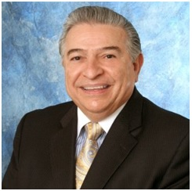

Anthony J. Petruzzi, Jr. was born in New Jersey and is married to Kathy and has twin sons, Tony & Charles. He moved to Boca Raton, Florida after retiring from corporate life in 1990 to open Cambridge Mortgage, Inc and Cambridge Realty, Inc and has been serving South Florida ever since. Tony started his career as a Math and English Teacher in New Jersey where he holds a Bachelors, degree in Math & English from Seton Hall University. He also holds a Masters degree in Math & English, and 32 credits towards a PhD in Education from Seton Hall University.
Early in his career Tony earned a real estate license in New Jersey and began selling real estate during the summers while teaching school. His love of numbers soon landed him a career move to Mid-Town Manhattan working at Control Data Corporation, which was a Fortune 50 company. Starting as a commercial loan officer in their Commercial Credit Corporation subsidiary, Tony worked his way thru the ranks by finishing in the top 5% of worldwide sales out of 50 offices in various countries and 55,000 employees, and ended his career as the Professional Industries Manager responsible for overseeing Commercial Lending at 2 offices in Manhattan, 2 on Long Island, 1 in Connecticut, 1 in New Jersey, and 1 in Philadelphia. Tony earned many distinguished awards during his corporate years and closed the largest loan transaction at Commercial Credit to date during his career at $1 Billion Dollar between what was known at the time as City Bank and Control Data Business Centers. During his corporate career in Manhattan, he published articles in various industry publications, and was feature speaker at many industry seminars, and was featured in a "Success" magazine article . Tony also served as the Vice Chairman of The New York Chamber of Commerce and Industry under Mayor Ed Koch, as Associate Director of Professional Development for the National Association of Accountants, and on the organizational committee for the Center for Entrepreneurial Management, American Payroll Association, American Association of Individual Investors, and The New York City Partnership under David Rockefeller.
In addition to holding a Mortgage Brokerage Business License in Florida since 1991, Tony also holds a Real Estate Broker License, a Series 7 Securities License, Series 31 & 63 & 65 Securities Licenses, and Life, Accident, Health and Annuity Insurance Licenses; and is therefore able to provide lending scenarios utilizing all of the above securities including Stocks, Bonds, Mutual Funds, Options, Futures, Commodities, and Managed Money Accounts.
Anthony Petruzzi

Cambridge Mortgage, Inc.
Phone: 561-756-5428 - Fax: 561-241-1116